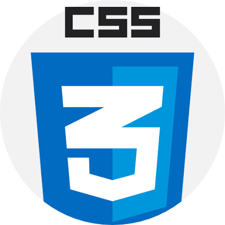
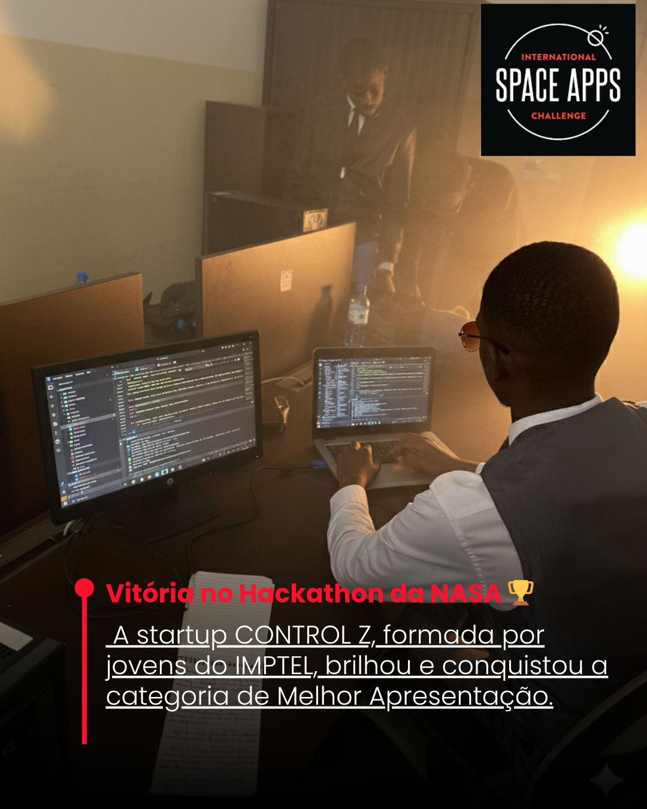
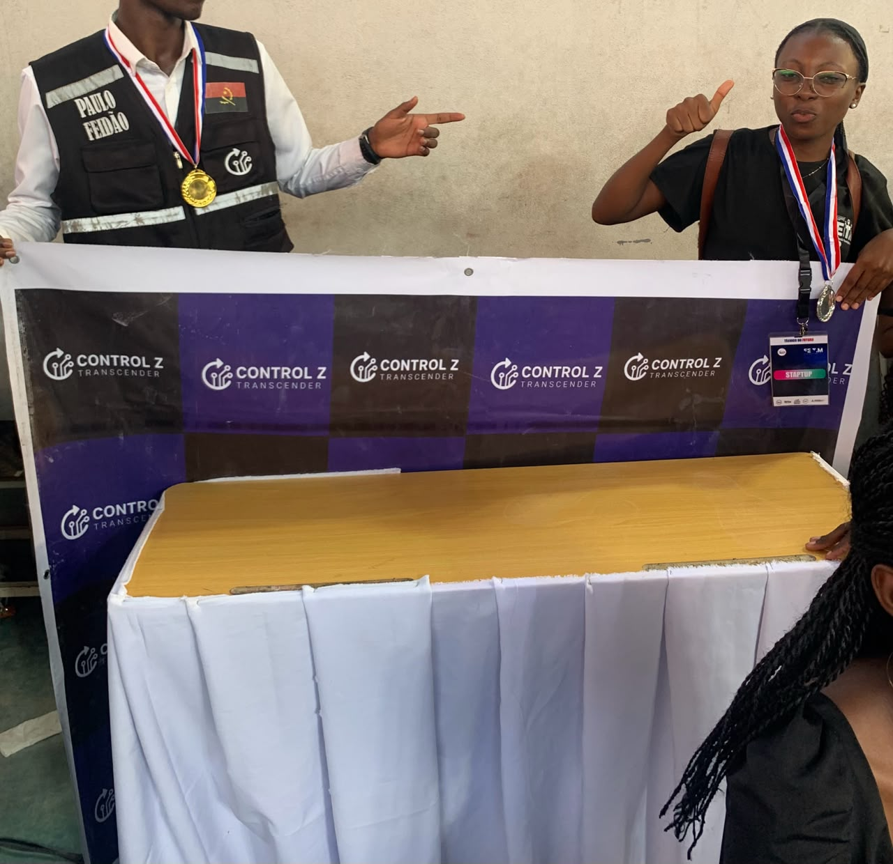
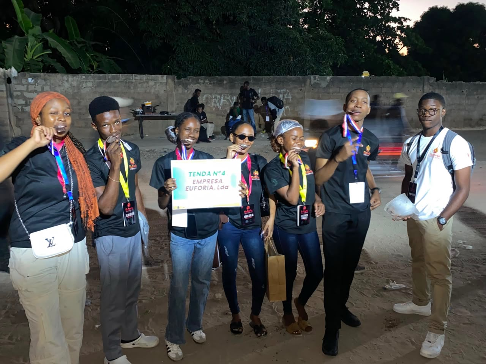

CAPÍTULOO início
CAPÍTULO 01
Transforming ideas into real-world technology.
Technologies I use to turn complex problems into working solutions.
 HTML
HTML

CSS JavaScript
JavaScript React
React
 Handlebars
Handlebars Node.js
Node.js Express.js
Express.js MySQL
MySQL
 MongoDB
MongoDB PostgreSQLReact Native
PostgreSQLReact Native Expo
Expo C++
C++
 Arduino
Arduino ESP32
ESP32Sou Paulo Feidão, programador Full Stack e desenvolvedor IoT. Comecei pela robótica e fui aprendendo cada tecnologia à medida que os meus projetos exigiam novas soluções — do C++ e microcontroladores ao desenvolvimento web, bases de dados e aplicações móveis.
Sou fundador e COO da Control Z, Diretor Técnico do Núcleo Científico e vencedor de reconhecimentos em tecnologia e empreendedorismo, incluindo a categoria Melhor Apresentação do NASA Space Apps Challenge. Gosto de transformar problemas reais em soluções digitais bem construídas.
A minha jornada combina desenvolvimento Full Stack, IoT, aplicações móveis e UI/UX com execução de projetos, liderança técnica e mentalidade empreendedora.



Melhorei o visual de sites de várias empresas, tornando-os mais modernos, bonitos e fáceis de usar. Aqui podes ver como eram os sites antes e como poderiam ficar depois das minhas melhorias, com imagens e vídeos que mostram cada detalhe do meu trabalho.
Tens uma ideia, um projeto ou uma oportunidade? Vamos conversar. Podes também acompanhar o meu trabalho e conectar-te comigo através das redes sociais.
VAMOS CONVERSAR
O que dizem
sobre o meu trabalho.
Deixa a tua opinião, sugestão ou mensagem. Todos os comentários são revistos antes de serem publicados.